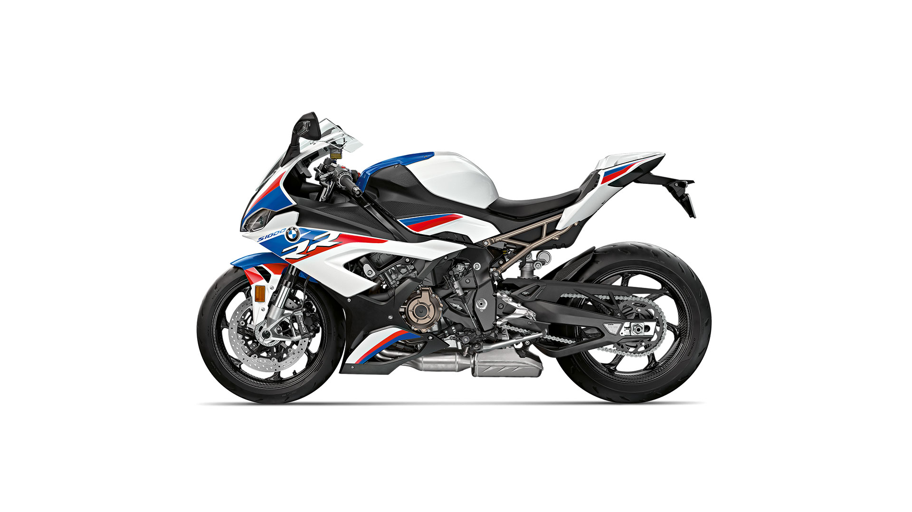
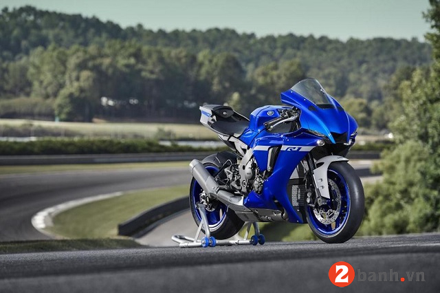

Kawasaki Z1000 2022
Kawasaki Z1000 2022
Kawasaki là được đánh giá cao ở thị trường Việt Nam nhờ những mẫu xe phân khối lớn với ngoại hình “hầm hố” cùng khối động cơ mạnh mẽ.Những mẫu môtô Kawasaki phiên bản 2022 đã chính thức có mặt tại Việt Nam. Đáng chú ý trong số này là Ninja ZX-25R SE, Ninja ZX-10R, Z1000R, Z650 phiên bản mới, hay mẫu xe Sport City lần đầu có mặt tại Việt Nam. Hiện nay, Kawasaki đã có showroom chính thức tại thị trường Việt nam vì vậy, xe được bán ra với mức giá rẻ hơn trước.

BMW S1000RR
Ông vua của dòng siêu xe thể thao.
Luôn ép đến giới hạn và tìm kiếm đường chạy hoàn hảo, cỗ máy 207 mã lực giờ đã trong tay bạn. Một sức mạnh không bị kìm hãm đẩy chiếc RR của bạn đến mức tối đa – với mô-men xoắn cực đại 113 Nm tại 11.000 vòng/phút và biểu đồ mô-men xoắn đạt ít nhất 100 Nm trong phạm vi từ 5.500 đến 14.500 [vòng/phút]. Mười năm sau thế hệ đầu tiên của RR đã làm mê hoặc thế giới xe máy, giờ chúng ta đang bước vào một cấp độ mới của sự hiệu năng cao. Chúng tôi đã tinh chỉnh gần như mọi thành phần của chiếc RR – từ trước đến sau. Kết quả: trọng lượng nhẹ hơn và hiệu suất cao hơn rõ rệt. Bạn đã sẵn sàng cho vị trí đầu bảng và sự chiến thắng?

Yamaha R1
Vừa qua mẫu xe môtô Yamaha R1 2022 phiên bản mới nhất đã chính thức công bố giá bán tại thị trường Mỹ sau hơn 2 tháng kể từ lần đầu tiên giới thiệu. Mẫu xe Sport-bike 1000cc cao cấp R1 mới nhất 2022 với tên đầy đủ là Yamaha YZF-R1 có thiết kế ngoại hình tương tự R6 đã được nâng cấp và cải tiến về kiểu dáng lẫn công nghệ từ giải đua MotoGP giúp người lái có một trải nghiệm hoàn toàn mới.